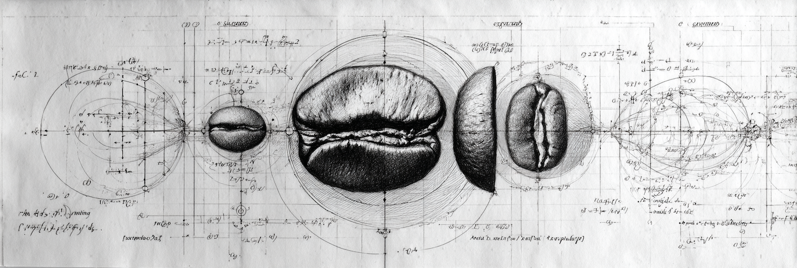

The Strong CP Problem in a Cup of Coffee

The first thing I do in any coffee shop is check the bookshelf. It's a diagnostic — you can read a place by what it keeps on its shelves the way you can read a person by what they keep next to their bed.
Rational Coffee sits by the river in Hualien, just off Jinghua Bridge. Small, quiet, the kind of place you'd walk past if you weren't looking. The bookshelf had graph theory, quantum mechanics, a calculus of variations textbook. This was not decoration.
Then the menu arrived. Two blends: one called Resonance, the other Entanglement. Resonance — coupled oscillators, energy transfer between matched frequencies. Entanglement — nonlocal correlation, things that stay connected across distance. One blend named for how things sync when they're close. The other for how things hold when they're apart.
And then the desserts:
Well-Tempered is Bach — a tuning system that makes all keys equivalent, every position playable. A Möbius strip is a surface where inside and outside are the same. The dessert is a thing where every position is equivalent and there is no boundary. Dual origin cacao, two places becoming one surface. They actually made the physical shape.
And Invisible Pink — the color that doesn't exist on the visible spectrum. Pink has no wavelength. It's your brain interpolating between red and violet, two ends that shouldn't touch, but your visual cortex closes the loop and invents something that isn't there. This dessert does what a rainbow can't.
I laughed silently: is this owner a former physics student?
The rest of the bookshelf held history, philosophy, social theory. Then I saw a copy of Sidney Coleman's Aspects of Symmetry — one of the canonical texts in theoretical physics — with so many bookmarks it looked like it was growing feathers. When the young lady came to take my order, I couldn't help myself. Whose book is that?
"They are his." She pointed to the young man behind the bar.
It opened up the conversation.
He was wearing glasses, in his late 20s. Quiet presence. He told me he'd studied theoretical physics. His PhD research was in QCD — quantum chromodynamics, the theory of the strong nuclear force. Specifically, he was working on why a certain value was so small.
This is the Strong CP Problem. In QCD, there is a parameter called θ (theta) that, theoretically, could take any value. But experimentally, it is almost exactly zero — less than 10⁻¹⁰. There is no known reason it must be this small. It is one of the most beautiful unsolved questions in particle physics: why does something that could be anything choose to be almost nothing?
His doctoral advisor was a student of Leonard Susskind — co-inventor of string theory, the physicist who spent thirty years fighting Stephen Hawking over whether information survives a black hole, the architect of the holographic principle. That was his academic lineage. It ran all the way back to one of the brightest points in the field.
He left.
When he talked about it, he joked: if you haven't produced anything significant before thirty, you're probably not cut out for it. His advisor's style of encouragement was: "沒事，試一下，實在不行還可以回家種田。" It's fine, give it a try — worst case you can always go home and farm.
He wasn't being self-deprecating. Theoretical physics has a brutally clear selection function, and he measured himself against it honestly. That kind of clarity — the ability to assess yourself without flinching and then act on what you see — is rarer than talent.
He didn't leave physics. He changed the medium.
On the counter, alongside Coleman, was a pile of published academic papers on coffee. He roasts his own beans in small batches. He had been searching, in his words, for a set of unified golden parameters — the extraction conditions that govern what a bean can become. He has been collecting data for years. While most specialty coffee shops build on aesthetics and vibe, he is running it as an empirical research program.
He showed me an unfinished project: coffee pucks pressed into acrylic, each one preserved like a specimen. He hadn't figured out the fabrication yet. The same impulse as the Möbius — making ideas into physical objects — but this one was still unsolved. A prototype with no solution. He kept it on the shelf anyway.
Later, talking to another customer, I overheard him explaining his roasting process: the problem is fluid dynamics. Air inside the drum heats unevenly — turbulent flow creates pockets of higher and lower temperature, so the same batch of beans receives different thermal histories depending on position. He was describing it the way you'd describe a problem set: identify the variable, characterize the distribution, find the control. Navier-Stokes in a coffee roaster.
That is the same rigor. The same question, restructured: not why is θ so small, but why does this bean, at this temperature, at this pressure, at this time, produce this?
He told me about the detours. Early on he'd chased the masters, studied competition data, read papers on extraction yield. He optimized for higher acidity. Then lower acidity. Then the removal of astringency. One variable at a time, the way you'd tune a model — isolate, adjust, measure, repeat. But he kept hitting the same wall: optimizing any single axis didn't make the coffee better. A cup could score well on every metric and still taste like nothing in particular.
I said: maybe this isn't a single-variable optimization problem. Maybe the question underneath all of it is how you define good.
He stopped. Not a polite pause — a real one. The kind where someone is reconsidering something they've thought about for a long time but never said out loud. Then he said: yes. But it's hard. And it's not scientific. Because good is breaking symmetry.
He said it flatly, the way you'd report a result that surprised you once but has since become obvious. Just: I looked for symmetry and found that the thing I was actually after was its absence.
In physics, symmetry is the deepest grammar. Every conservation law — energy, momentum, charge — is the consequence of a symmetry, proven by Emmy Noether in 1918. Time looks the same in every direction: energy is conserved. Space looks the same in every position: momentum is conserved. Symmetry is what makes the universe predictable. It is the reason physics works at all. When a physicist says something is "not scientific," he is saying: it lives outside the jurisdiction of symmetry.
But a perfectly symmetric system is uniform. Nothing is distinguished. No point is special. No moment is better than any other. Symmetry means everywhere is the same.
Good, by definition, is the claim that here is better than there. That this has something that doesn't. Good requires unevenness. Good lives in broken symmetry.
He spent his entire PhD asking why a symmetry in the strong nuclear force refused to break when every theory said it should. He never found the answer. The symmetry held, inexplicably, and he left. Then he came to coffee and tried to build what he'd been unable to break — a symmetric system, one set of golden parameters that would hold across every origin, every process, every morning. The physicist's instinct: find the invariant. Find the law that doesn't change.
Coffee broke him of that. Bean by bean, season by season, wash by wash, it taught him what particle physics never did: that the good cup is not the universal cup. There is no invariant. The good is precisely what changes — this bean, this water, this morning, and the unrepeatable ratio between them.
Taiwan's coffee floor is unusually high. A decent cup anywhere on the island costs about NT$150 ($4.70). Specialty coffee's ceiling — the premium that craft, story, and process can command — is compressed. In Seattle or the Bay Area, "former theoretical physicist, academic grandson of Susskind, applying scientific method to coffee" is a narrative that unlocks pricing power. In Hualien, he competes at the same NT$150 as the shop next door. His edge is invisible at the point of sale.
His product and his distribution channel don't match. The value he creates exceeds what his market can reflect back to him. This is, structurally, the same problem as before: being too far along a path for the environment you're standing in.
We talked for hours. The furniture was his own design, he'd built the space the way he'd built the menu. When we got to Peter Thiel's Zero to One. He said the hard part was coming up with the idea that qualifies. I half-joked: by Thiel's framework, you shouldn't open a coffee shop at all — it's definitionally a one-to-n business. He laughed.
I suggested he could teach. Tell the story — the physics, the method, the path from Strong CP to single-origin. He said: it's hard to explain clearly. And most people don't care.
He's probably right. Most people don't care about physics in a cup of coffee. But he said it without bitterness, the way you state a boundary condition before solving around it.
We stayed for more than two hours. The financier was clean and warm. The Invisible Pink was one of the best strawberry cakes I've had — the cream impossibly airy, a cloud that dissolves on contact, the blueberry confiture a thin precise layer over a perfect baked butter tart base. Layers designed to unfold at different speeds on the tongue. A temporal composition.
The Möbius wasn't available that day.
But the color created by mind was.
I don't know if he's happy. I think he has drive, and he knows his craft, and that might be a more durable thing than happiness. He stood in one of the hardest fields humans have built, walked as far as most people will never go, looked clearly at where he was, and turned around without drama. Then he carried everything he'd learned into a small shop in Hualien where he puts Coleman on the counter and names a dessert after a topological surface.
The best permission his advisor gave him wasn't you can do it. It was: you can try, and if it doesn't work, the sky won't fall.
And it didn't. He's here. The bookshelf is still full of physics. The coffee is still being measured.
But the parameters are no longer being searched. Not the unified ones. He gave that up. What he does now, every morning, is listen to the specific bean in front of him and find where its symmetry wants to break. Every cup is a new experiment. Every cup is an admission that the universal answer doesn't exist, and that this is not a failure — it's the condition for anything to be good at all.
Before we left, he told me about the name. 有理咖啡. Rational Coffee. He said 有理 comes from 有理數 — rational numbers. Numbers that can be expressed as a ratio. The ratio of water to coffee. That's what the name means.
A man who spent years searching for why a symmetry wouldn't break, then more years trying to build a symmetry that would hold, named his shop after the simplest possible relationship between two numbers. Not equal. Not symmetric. Just: one divided by the other, cleanly.
The question didn't get smaller. He just finally found the right size for the answer.